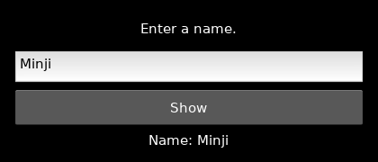

Label(text="설명", font_name=font)짧은 글을 보여 줍니다. tkinter Label, wx StaticText에 대응합니다. 나중에 .text로 바꿉니다.
 인공지능 파이썬 실무
인공지능 파이썬 실무부록 · Kivy로 같은 앱 다시 만들기 · 실습 2 / 9
본편에서 익힌 창·위젯·배치·이벤트·메모장을 자체 렌더링 터치 UI로 옮깁니다.
BEFORE THE CODE
새 이름·속성이 코드에 나오기 전에 짧게 봅니다. 외우기보다 역할을 먼저 구별하세요.
Label(text="설명", font_name=font)짧은 글을 보여 줍니다. tkinter Label, wx StaticText에 대응합니다. 나중에 .text로 바꿉니다.
entry = TextInput(multiline=False)
entry.text한 줄 입력의 현재 문자열입니다. Entry.get() / TextCtrl.GetValue()와 같습니다.
button.bind(on_press=self.show_name)버튼을 누르는 순간에 함수를 부릅니다. command= / Bind(EVT_BUTTON)에 대응합니다. show_name()처럼 괄호를 붙이면 지금 실행됩니다.
이름·아이디처럼 줄바꿈이 없는 값입니다. 여러 줄 메모는 multiline=True를 씁니다.
RESULT PREVIEW

CODE WORKSPACE
Python 실행: 브라우저에서 바로 실행합니다. 문법 확인: GUI 창·카메라·대용량 패키지를 사용하는 PC 실습 예제입니다. 웹에서는 문법만 검사하고, 실제 동작은 내려받아 PC에서 확인하세요.
실행 엔진은 처음 실행할 때 내려받습니다. 패키지 크기에 따라 최초 준비에 최대 3분이 걸릴 수 있으며 네트워크가 필요합니다. 실행은 최대 30초이며 중지 후 다시 실행할 수 있습니다.
실행할 예제를 선택하세요.